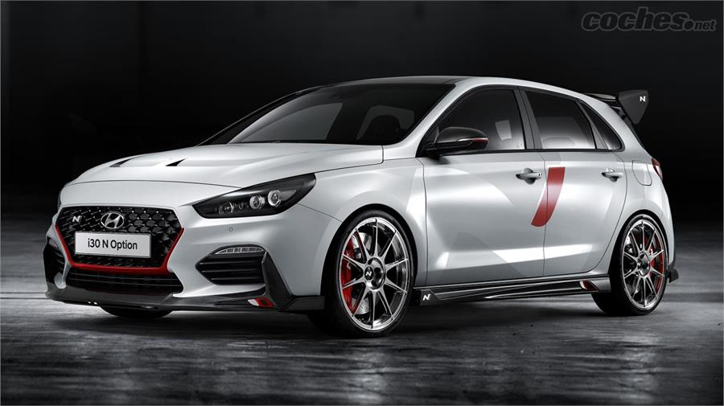
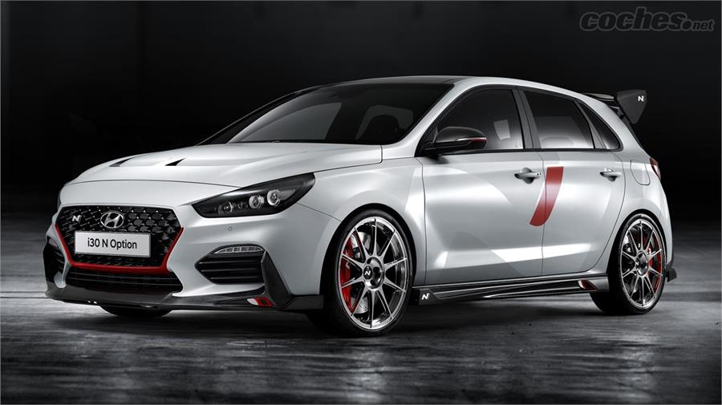

BIENVENIDO, disfruta sobre ruedas
Vídeo propiedad de @nycars ©
La historia del automóvil se remonta al siglo XVIII y se puede dividir en tres etapas: vapor, electricidad y gasolina. El primer automóvil de combustión interna fue el Benz Patent-Motorwagen, inventado por el alemán Karl Benz en 1885. Etapa de vapor: El inventor francés Nicolas-Joseph Cugnot creó un vehículo a vapor alrededor de 1770. Cugnot tuvo el primer accidente automovilístico de la historia. Etapa de gasolina: En 1885, Karl Benz construyó el Benz Patent-Motorwagen, un triciclo con motor de gasolina. Benz patentó su invento en 1886 y comenzó a producirlo en 1888. Gottlieb Daimler y Wilhelm Maybach, de Stuttgart, diseñaron su propio automóvil en 1889. Producción masiva: En 1900, la producción masiva de automóviles había ya empezado en Francia y Estados Unidos. En 1908, Henry Ford comenzó a producir automóviles en una cadena de montaje. El certificado de patente del Benz Patent-Motorwagen forma parte del Programa Memoria del Mundo de la Unesco.
 
